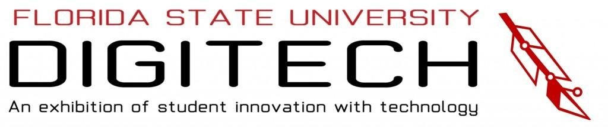
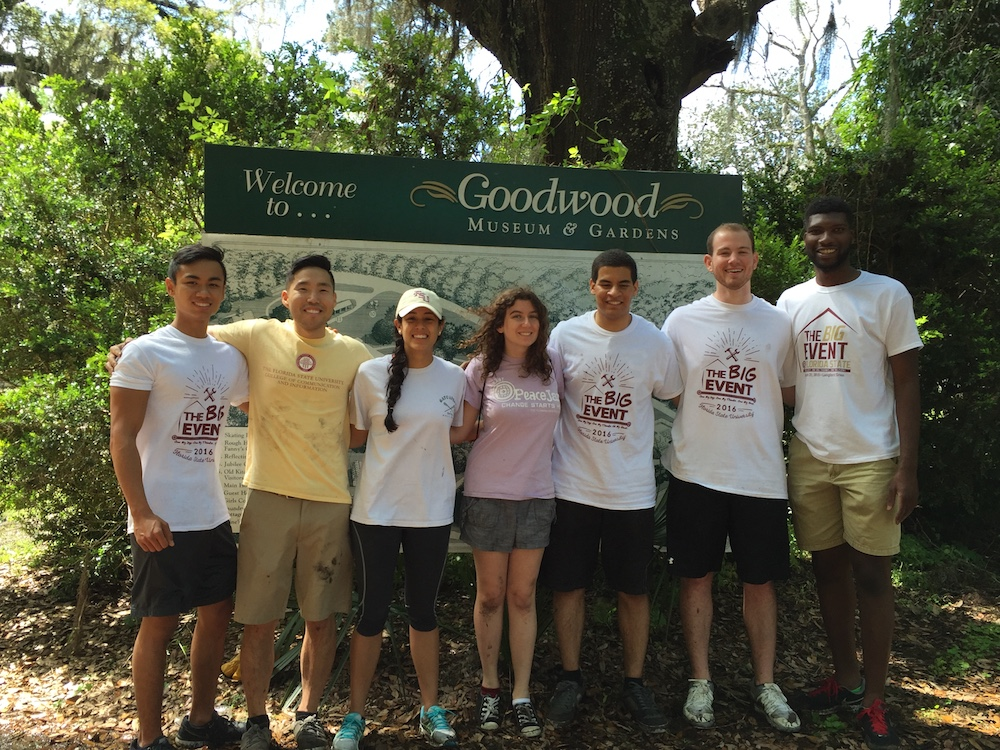

Portfolio
Organizations
AITP (Association of IT Professionals): Recruiter - Organization at FSU which aims to help CCI students hone their technical, leadership and networking skills.
Social Spear: Active Member - A group aiming to connect with local companies and individuals working in any industry to help them learn the most effective ways to use social media to benefit their organization.
THT (Transfers Helping Transfers): Active Member - Club for anyone who need help with the transition into FSU. Whether it be as a transfer student, freshman leaving high school, anyone just wanting to learn Tallahassee a little more, or if you just want to make friends.
Volunteering
FSU Digitech - Event where FSU students are able to showcase their technology: robots, apps, artistic creations, engineering wonders, tech start-ups, all types of innovations.
- Helped setup computer screens for each individual attendee.
- Provided care and services for those in need at the event.
- Monitored the help desk and kept an eye on equipment.
- Monitored the help desk and kept an eye on equipment.
- Cleaned up after the event.
The BIG Event FSU - One of the largest, one-day, student-run service projects in the nation where the students of colleges and universities will come together to say ‘thank you’ to the residents of their college town.
- Moved and cleaned up bricks and debris from back entrance of Goodwood Museum and gardens.
- Planted two rolls of plants to beautify the back entrance of the Garden.
FSU Community Outreach Group - Tech Expo at the Tallahassee Senior Center hosted by FSU Outreach Group where we showcased some new technology including drones, robots, tablets, etc. Helped show the elderly how to use the newest technology and answered any questions they had.
Skills
- Mac OS
- Windows
- Excel
- Word
- PowerPoint
- C++
- MySQL
- HTML5
- Java
- X-Code
- MS Access
- Unix
- Mailgun
- Luminate Online
- Git Hub